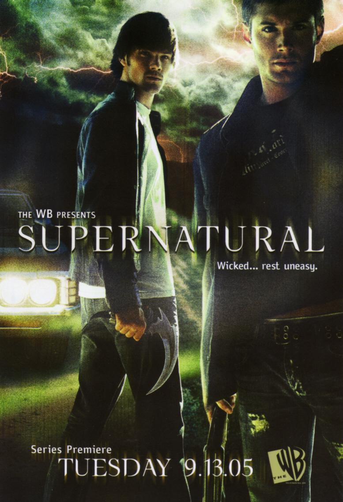

Supernatural is about two brothers, Sam and Dean Winchester. Traveling all across the country hunting supernatural monsters in their '67 Chevy Impala'. Their mother died 22 years ago in a mysterious fire, so they were raised to hunt down supernatural things like demons, ghosts, vampires, and monsters, not your typical hunters. Now their father, John, has gone missing.
In the first season, Dean finds Sam at university. They begin their life on the road as they search for clues to find their father, helping as many people along the way as they can. "Saving people hunting things. The family business."
Sam begins to develop psychic abilities and visions, which lead them to someone else with similar abilities. When they finally reunite with their father, he tells them that the thing that killed their mother is a demon named Azazel (Yellow Eyes). He chose "special children" and on their 6 month birthday, he would bleed in their mouths to give them special powers and then kill the mothers.
The only thing that can kill it is a special gun made by Samuel Colt. The season ends with a truck crashing into the side of the Impala with Sam, Dean, and their father inside left unconscious and covered in blood!